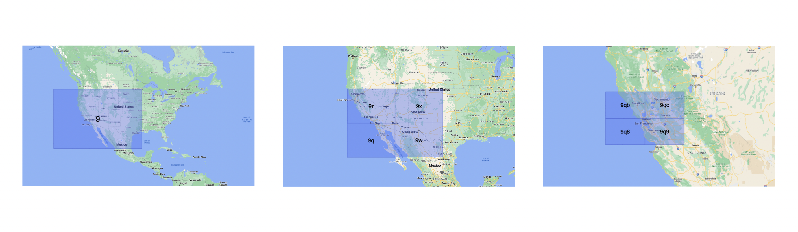
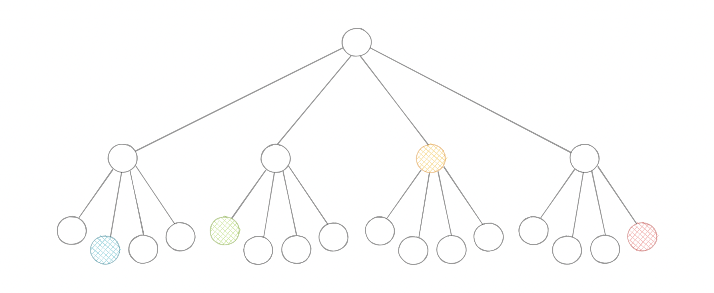
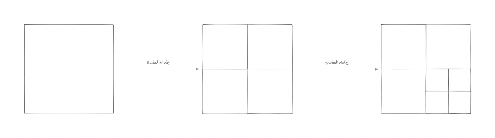
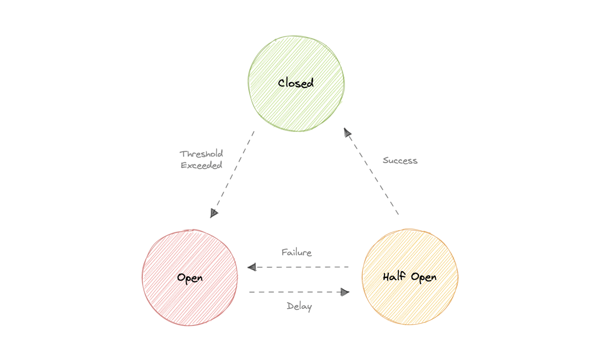
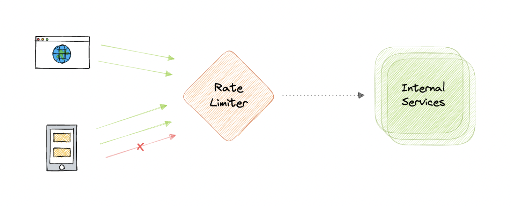
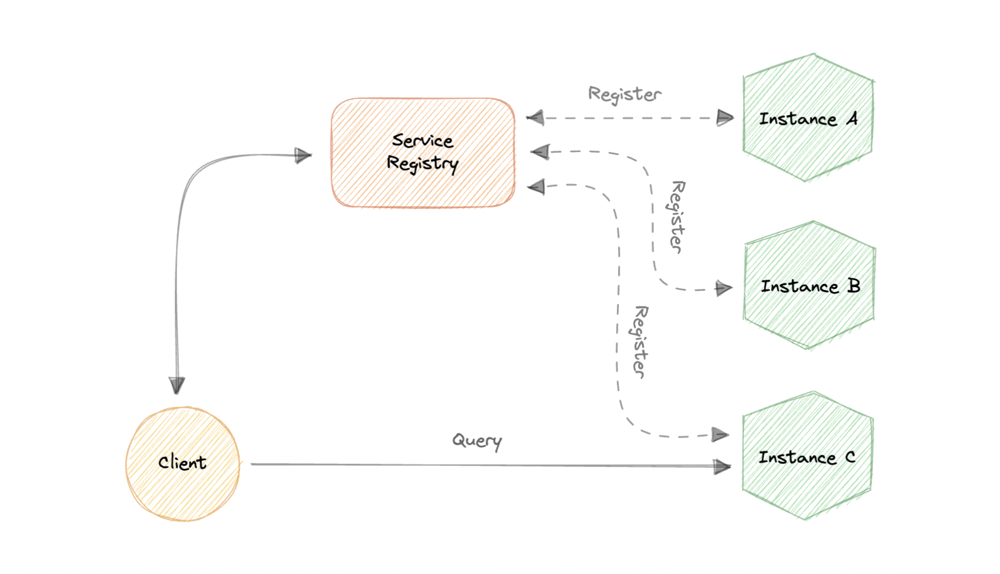
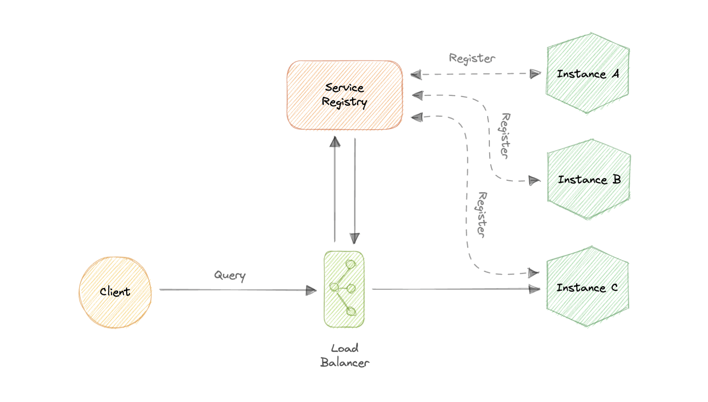
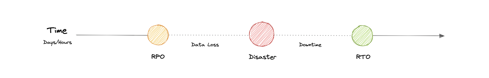

Mẫu thiết kế hệ phân tán
Các pattern & kỹ thuật giúp hệ phân tán ổn định và mở rộng: Geohashing/Quadtrees, Circuit Breaker, Rate Limiting, Service Discovery, SLA/SLO/SLI và Disaster Recovery.
Geohashing & Quadtrees
Geohashing (Gustavo Niemeyer, 2008): mã hóa tọa độ (lat, long) thành chuỗi alphanumeric ngắn (Base-32). Ví dụ San Francisco 37.7564, -122.4016 → 9q8yy9mf.
- Chỉ mục không gian phân cấp — ký tự đầu xác định 1 trong 32 ô, mỗi ô lại chứa 32 ô con.
- Hai điểm gần nhau khi geohash chung tiền tố dài → tìm "hàng xóm gần nhất" bằng so sánh chuỗi.
- Geohash càng dài → vị trí càng chính xác (cũng có thể dùng để ẩn danh vị trí).

Quadtrees: cây mà mỗi node trong có đúng 4 con, chia đệ quy không gian 2D thành 4 góc phần tư. Hiệu quả cho tìm kiếm điểm trong một vùng 2D; chỉ chia nhỏ node sau một ngưỡng. Dùng trong: bản đồ (Google Maps), location-based service (Uber). Geohashing được hỗ trợ bởi MySQL, Redis, DynamoDB, Firestore.


Circuit Breaker
Pattern phát hiện lỗi và ngăn lỗi tái diễn liên tục — bọc lời gọi từ xa trong một "cầu dao". Khi số lỗi vượt ngưỡng, cầu dao "ngắt" và trả lỗi ngay lập tức thay vì cố gọi (tránh cascading failure).

- Closed: bình thường, mọi request đi qua. Lỗi vượt ngưỡng → Open.
- Open: trả lỗi ngay, không gọi service. Sau timeout → Half-open.
- Half-open: cho qua một số request thử. Thành công → Closed; vẫn lỗi → Open.
Rate Limiting
Giới hạn tần suất một thao tác để bảo vệ tài nguyên — chống DoS, kiểm soát chi phí (giới hạn auto-scaling), điều tiết luồng dữ liệu cho API.
| Thuật toán | Cách hoạt động |
|---|---|
| Leaky Bucket | Hàng đợi FIFO, xử lý đều đặn; queue đầy thì bỏ request ("rò rỉ"). |
| Token Bucket | Mỗi request cần 1 token; hết token thì từ chối; bucket nạp lại theo chu kỳ. |
| Fixed Window | Đếm request trong cửa sổ n giây; vượt ngưỡng thì bỏ. |
| Sliding Log | Lưu log có timestamp cho từng request; tính tổng để quyết định. |
| Sliding Window | Lai fixed window + sliding log; làm mượt các đợt bùng nổ (burst). |

Hai vấn đề: Inconsistency (mỗi node đếm riêng → user vượt giới hạn toàn cục bằng cách gọi nhiều node; khắc phục bằng sticky session hoặc store tập trung như Redis) và Race condition (cách "get-then-set" sai khi nhiều request đồng thời; ưu tiên cách "set-then-get" hoặc lock — nhưng lock dễ thành bottleneck).
Service Discovery
Phát hiện service trong mạng. Trong microservices, số instance & vị trí thay đổi liên tục → client cần cơ chế tìm chúng. Hai kiểu:
- Client-side discovery: client tự hỏi service registry để biết vị trí service.
- Server-side discovery: qua một thành phần trung gian (vd load balancer) chuyển tiếp tới instance khả dụng.


Service Registry: database chứa vị trí các instance (phải highly-available & cập nhật). Đăng ký bằng self-registration (service tự đăng ký + heartbeat) hoặc third-party registration. Service Mesh (Istio, Envoy): quản lý giao tiếp service-to-service có quan sát & bảo mật. Ví dụ: etcd, Consul, Zookeeper.
SLA, SLO, SLI
| Thuật ngữ | Ý nghĩa |
|---|---|
| SLA (Agreement) | Cam kết giữa công ty & người dùng về các chỉ số (vd availability). Thường do bộ phận business/legal viết. |
| SLO (Objective) | Mục tiêu cụ thể về một chỉ số (vd uptime) phải đạt để tuân thủ SLA. Nằm trong SLA. |
| SLI (Indicator) | Chỉ số thực đo được để xác định SLO có đạt không. SLI phải luôn ≥ SLO. |
Disaster Recovery (DR)
Quá trình khôi phục truy cập & chức năng hạ tầng sau sự cố (thiên tai, tấn công mạng...). Dựa vào replicate dữ liệu & xử lý ở vị trí off-premises không bị ảnh hưởng.
- RTO (Recovery Time Objective): thời gian gián đoạn tối đa chấp nhận được.
- RPO (Recovery Point Objective): lượng dữ liệu mất tối đa chấp nhận được (tính từ điểm backup gần nhất).
Chiến lược: Back-up (đơn giản nhất) → Cold Site (hạ tầng cơ bản ở site phụ) → Hot Site (luôn giữ bản sao cập nhật — đắt nhưng giảm downtime mạnh).

Geohashing/Quadtrees: tìm vị trí gần nhau hiệu quả. Circuit breaker (Closed/Open/Half-open): chặn cascading failure. Rate limiting (token/leaky bucket, sliding window): chống lạm dụng. Service discovery + registry: tìm service động. SLA⊃SLO←SLI. DR: RTO/RPO + backup/cold/hot site.